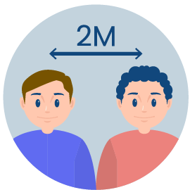
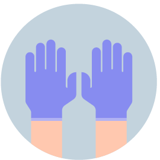

COVID-19 - это болезнь, развивающаяся при заражении коронавирусом. Впервые обнаружена в Китае в конце 2019 года. В первую очередь поражает легкие. В большинстве случаев вирус передаются воздушно-капельным путем (при кашле, чихании) и при прямом контакте. Реже вирус может распространяться через загрязненные поверхности.
основным путем передачи коронавирусной инфекции является воздушно-капельный - это происходит при кашле, чихании и разговоре, поэтому при ношении масок риск заразиться коронавирусом снижается в десятки раз,
одну маску можно носить не более 3ех часов;
Держи дистанцию

не менее 1.5-2 метра;
не здоровайся за руки с другими людьми.
Носи перчатки

обрабатывай их так же, как и руки;
не трогай лицо;
утилизируй правильно.
Еще вопросы?
Что делать если заболел?
Не выходи из дома, соблюдай карантин 14 дней;
Вызови врача на дом;
Выполняй рекомендации врача;
Пей много теплого чая;
Постоянно следи за температурой и общим состоянием;
Часто проветривайте помещение.
Что делать если заболел близкий человек?
Вызови врача на дом;
Выделите больному отдельную комнату в доме;
Ограничьте до минимума контакт между больным и близкими;
Часто проветривайте помещение;
Часто мойте руки с мылом
Ухаживая за больным, прикрывайте рот и нос маской или другими защитными средствами.
Как я могу заболеть?
При контакте с зараженным;
Не соблюдая правила гигиены (мытье рук, проветривание помещения);
Трогая лицо необработанными руками;
Принебрегая маской;
Игнорируя правила социального дистанцирования.
Спасем мир?
Защити себя!
Помоги Нику защититься от коронавируса.
Cобери как можно больше масок за 20 секунд.
Управление с помощью стрелок на клавиатуре.
Перезапустить игру - клавиша "Пробел".
Поймай вакцину!
Тебе предстоит спасти целый мир! В этой игре ты главный герой! Собери как можно больше баночек с вакциной за 30 секунд. Остерегайся злобных вирусов.